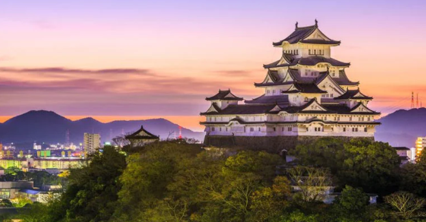
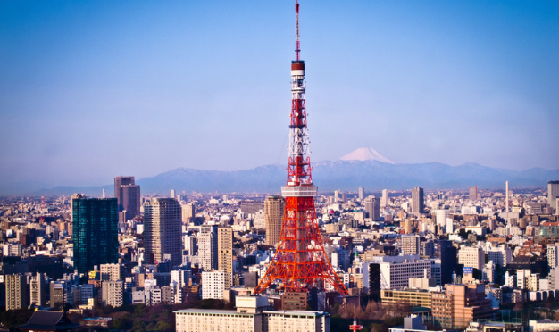
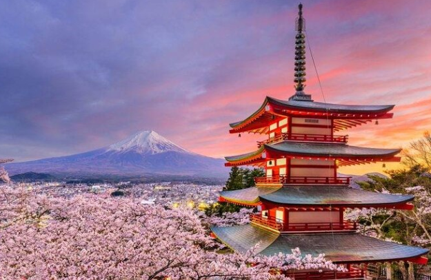

PONTOS TURÍSTICOS
O Japão é um país onde tradição e modernidade convivem em perfeita harmonia. De templos antigos a cidades futuristas, cada destino revela uma parte única da cultura japonesa. Explore paisagens deslumbrantes, história milenar e a hospitalidade que torna o Japão um lugar inesquecível.
-
Castelo de Himeji – Hyogo
Castelo histórico e bem preservado, conhecido como “Castelo da Garça Branca” por sua aparência elegante e branca.
-
Torre de Tóquio – Tóquio
Torre de observação inspirada na Torre Eiffel, com vistas panorâmicas da cidade e iluminação noturna impressionante.
-
Monte Fuji – Honshu
Vulcão sagrado e montanha mais alta do Japão, famoso por sua forma simétrica e por trilhas de escalada.
-
Fushimi Inari Taisha – Kyoto

Santuário xintoísta com milhares de portões vermelhos (torii) formando túneis pelas montanhas — cenário icônico do Japão.